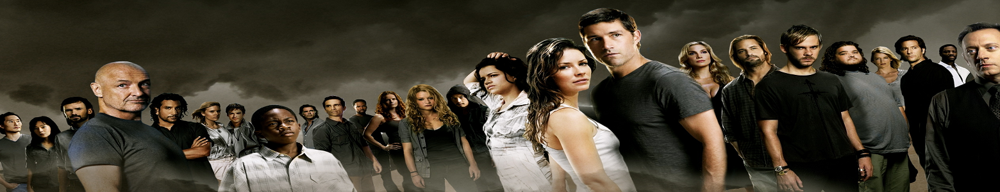
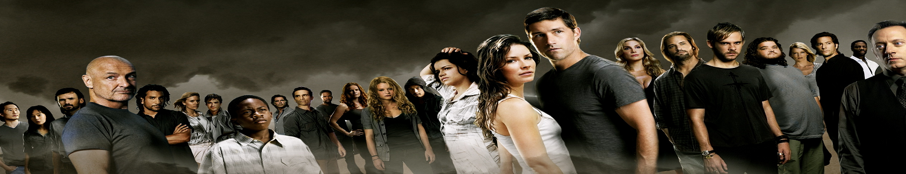

|  |

|
|  |
|

História
A criação ocorreu em 2018, com o pensamento de realizar o site para o trabalho do professor Leandro Duarte, Aos poucos as ideias chegaram, principalmente pela parte da madrugada, onde o site começou a ser construido. Dias, horas, minutos e segundos de pesquisas e pensamento fixo na codificação e também esforço duro para conseguir chegar a este resultado. A intenção é aprimorar o site após o termino, o deixando online com um número de séries, animes e jogos para quem quiser e gostar.
É de extrema importancia lembrar que eu não possuo nenhum direito autoral sobre o conteúdo aprensentado, tudo produzido é de autoria de seus respectivos criadores.